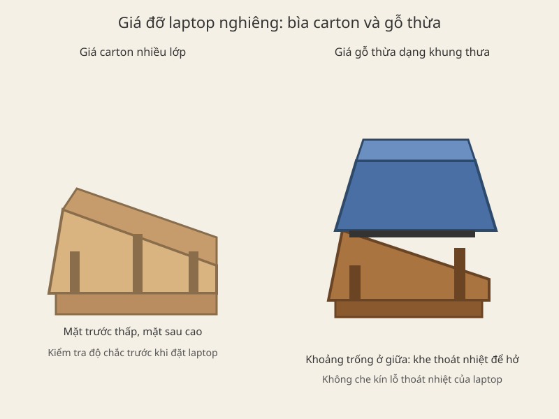

Tự làm giá đỡ laptop từ bìa carton cứng và gỗ thừa
Tác giả: Ruler
Laptop đặt trực tiếp trên mặt bàn thường làm màn hình nằm quá thấp so với tầm mắt. Bạn cúi đầu xuống nhìn màn hình cả buổi, cổ mỏi dần và vai cũng khom theo. Một chiếc giá đỡ kê cao phần sau của laptop có thể giúp màn hình gần tầm mắt hơn, đồng thời để hở khoảng trống phía dưới máy cho không khí lưu thông.
Bài viết này hướng dẫn hai mẫu: mẫu bìa carton gấp nhiều lớp, nhẹ và dễ làm, và mẫu gỗ thừa dạng khung nghiêng, chắc và dùng lâu hơn. Bài cũng không đề cập tới việc trồng cây cảnh hay cắm hoa tươi trong nhà. Bài cũng không dạy lại cách làm hộp đựng bút và khay để bàn bằng bìa carton — nếu bạn muốn làm thêm đồ đựng đặt cạnh giá đỡ, bạn xem Bài 9.
Giá đỡ giúp được gì, và không giúp được gì
Giá đỡ nâng phần sau của laptop lên, làm màn hình cao hơn và hơi nghiêng về phía bạn. Nhờ đó, bạn ít phải cúi đầu xuống hơn khi nhìn màn hình. Hướng dẫn về màn hình máy tính của Cơ quan An toàn và Sức khỏe Nghề nghiệp Hoa Kỳ (OSHA) nêu rõ: mép trên của màn hình nên đặt ngang hoặc hơi thấp hơn tầm mắt, còn tâm màn hình thường nằm thấp hơn tầm mắt ngang khoảng 15 đến 20 độ. Giá đỡ trong bài này không hứa sẽ đưa màn hình của mọi người tới đúng vị trí đó, vì chiều cao của mỗi người, chiều cao của bàn và kích thước của từng chiếc laptop đều khác nhau.
Giá đỡ cũng giúp ích cho việc thoát nhiệt. Nhiều máy hút không khí mát qua các khe ở mặt dưới rồi đẩy khí nóng ra phía sau hoặc hai bên. Một giá đỡ dạng khung hở, để trống phần giữa, có thể giúp các khe hút gió ở mặt dưới không bị mặt bàn hay mặt vải bịt kín. Trang SitBetterLab giải thích rằng giá đỡ không thay thế hệ thống làm mát có sẵn của laptop, mà chỉ thay đổi khoảng trống xung quanh máy và mức độ không khí tiếp cận được các khe thoát nhiệt. Cùng nguồn này cũng nhấn mạnh rằng giá đỡ không đảm bảo nhiệt độ sẽ giảm, vì kết quả còn tùy vào thiết kế làm mát của từng máy, khối lượng công việc, nhiệt độ phòng và bụi bám trong khe gió.
Chọn mẫu nào: bìa carton hay gỗ thừa
Hai mẫu trong bài này khác nhau ở độ chắc, độ bền và dụng cụ cần có. Bạn nên chọn mẫu dựa trên chiếc laptop của mình, chứ không dựa trên mẫu nào trông đẹp hơn.
| Tiêu chí | Mẫu bìa carton gấp nhiều lớp | Mẫu gỗ thừa nghiêng |
|---|---|---|
| Hợp với laptop nào | Laptop nhẹ, dùng cho công việc văn phòng, học trực tuyến | Laptop nhẹ và laptop cỡ vừa, dùng hằng ngày |
| Độ chắc | Vừa đủ nếu làm đúng và để keo khô hẳn | Chắc và ổn định hơn, dùng được lâu |
| Dụng cụ | Dao rọc giấy, thước kim loại, keo dán, ghim giữ | Cưa tay, giấy nhám, keo dán gỗ, kẹp giữ |
| Thời gian làm | Khoảng một buổi, chưa tính thời gian chờ keo khô | Khoảng một buổi đến nửa ngày |
Một điểm chung của cả hai mẫu là mặt đỡ phải để hở phần giữa. Bạn không nên làm giá đỡ bằng một tấm đặc kín ôm sát toàn bộ mặt dưới của laptop, vì tấm đặc đó có thể che mất khe hút gió ở mặt dưới. Bài hướng dẫn làm giá đỡ gỗ của Popular Science cũng nhắc điểm này: giá đỡ nên làm dạng khung thưa, để lộ càng nhiều phần thân máy càng tốt, vì đặt laptop lên một tấm ván đặc chẳng khác nào thêm một lớp cách nhiệt ở phía dưới.
Bạn cũng nên chuẩn bị sẵn bàn phím rời và chuột rời nếu dùng giá đỡ thường xuyên. Khi màn hình được kê cao, bàn phím của laptop cũng cao theo và dốc hơn, gõ lâu sẽ mỏi cổ tay và vai. Hướng dẫn của OSHA về tư thế làm việc nêu rằng tay, cổ tay và cẳng tay nên thẳng hàng và gần như song song với mặt bàn, khuỷu tay khép gần thân người và gập khoảng 90 đến 120 độ.
Đo laptop và tìm khe thoát nhiệt trước khi làm
Dù làm mẫu nào, bạn cũng nên bắt đầu bằng hai việc đo và nhìn, chứ không nên cắt vật liệu theo cảm tính. Trước hết, bạn đặt laptop lên một tờ giấy lớn, dùng bút chì vẽ viền quanh đáy máy, rồi dùng thước đo chiều rộng và chiều sâu của hình vừa vẽ. Bạn ghi hai số đo này ra giấy, vì cả hai mẫu trong bài đều lấy số đo đáy máy làm chuẩn. Với mẫu gỗ, Popular Science gợi ý giá đỡ nên hẹp hơn laptop một chút theo chiều ngang và dài hơn laptop một chút theo chiều sâu.
Tiếp theo, bạn lật laptop lại và nhìn kỹ mặt dưới cùng hai cạnh bên và cạnh sau. Bạn tìm các khe lưới nhỏ, thường là dãy lỗ li ti hoặc khe dài. Bạn ghi nhớ vị trí của chúng, vì khi đặt máy lên giá đỡ, bạn phải để các khe này không bị tấm đỡ che kín.
Mẫu 1: giá đỡ bìa carton gấp nhiều lớp
Mẫu này hợp với laptop nhẹ và người mới làm lần đầu. Ý tưởng chính là dùng nhiều lớp bìa chồng lên nhau và các tấm đỡ đặt cách nhau, thay vì dùng một tấm bìa mỏng duy nhất. Bìa sóng hai lớp là lựa chọn nên ưu tiên, vì hướng dẫn làm giá đỡ carton của Green Diary nêu rõ loại bìa này đủ cứng để chịu lực theo chiều đứng. Bạn nên chọn thùng carton còn khô, sạch, không có mùi lạ, không từng bị ướt mưa và không từng đựng hóa chất. Bạn bỏ qua tấm bìa đã mềm, có vết mốc hay dính dầu mỡ.
Bạn cần một thùng carton sóng hai lớp còn cứng, dao rọc giấy có lưỡi mới, thước kim loại, tấm lót cắt, bút chì, keo dán chắc dùng cho bìa cứng và một hộp ghim giữ để cố định mối dán khi keo chưa khô. Green Diary dùng keo siêu dính và ghim may để giữ các mảnh bìa khi keo còn ướt, vì ghim giữ cho các mảnh không trượt khỏi vị trí trong lúc keo khô và còn tăng thêm độ chắc cho mối nối.
Bạn cắt bìa thành các mảnh rời theo số đo đáy laptop đã ghi ở mục trước. Bạn cần một mảnh đáy làm đế, một mảnh đỡ trước thấp, một mảnh đỡ giữa và một mảnh đỡ sau cao hơn mảnh đỡ trước. Sự chênh lệch chiều cao giữa hai mảnh này tạo ra độ nghiêng của mặt đỡ. Bạn cũng cần hai hoặc ba tấm đứng dạng nghiêng làm khung chịu lực chính, đặt cách đều nhau dưới mặt đỡ. Nếu laptop của bạn nặng hơn mức nhẹ, bạn cắt thêm một tấm đứng nữa đặt vào giữa, theo gợi ý của Green Diary là máy lớn và nặng thì cắt thêm tấm đứng để chịu lực.
Bạn bắt đầu lắp từ đế. Bạn đặt mảnh đáy lên mặt bàn phẳng, rồi dán mảnh đỡ trước và mảnh đỡ giữa lên đế, dùng ghim giữ cố định trong lúc keo chưa khô. Bạn nên đặt hai mảnh đỡ này song song với nhau và cách nhau một khoảng trống ở giữa, để không khí có thể đi qua phía dưới laptop. Tiếp theo, bạn cắt một rãnh mỏng ở giữa mỗi tấm đứng, sao cho mảnh đỡ giữa lọt vừa vào rãnh đó, rồi trượt các tấm đứng vào, đặt cách đều nhau và dán cố định. Bạn dán mảnh đỡ sau vào cuối các tấm đứng, ở phía cao nhất của mặt nghiêng.
Đây là bước quyết định giá đỡ carton có dùng được hay không. Green Diary cảnh báo rõ: bạn không nên đặt laptop lên giá đỡ ngay khi vừa dán xong, vì làm vậy sẽ làm giá đỡ gãy và laptop rơi xuống. Nguồn này yêu cầu để keo khô và cứng lại ít nhất 15 giờ trước khi đặt bất cứ vật nặng nào lên giá đỡ. Bạn nên làm theo đúng thời gian chờ này, đặt giá đỡ ở chỗ khô thoáng và đừng chạm vào trong lúc chờ keo khô.
Khi keo đã khô hẳn, bạn kiểm tra độ chắc bằng cách đặt một chồng sách nặng tương đương laptop lên giá đỡ, để yên vài phút rồi quan sát xem mặt đỡ có võng xuống, các tấm đứng có nghiêng sang một bên hay các mối dán có nứt ra hay không. Chỉ khi giá đỡ đứng vững, bạn mới đặt laptop lên. Thời gian làm mẫu carton chỉ là ước chừng của người viết cho người mới làm lần đầu, chưa đo thực tế từng bước: cắt và lắp khung khoảng một buổi, chưa tính thời gian chờ keo khô ít nhất 15 giờ theo nguồn Green Diary.
Mẫu 2: giá đỡ gỗ thừa nghiêng
Mẫu này hợp với người đã có sẵn vài thanh gỗ thừa và muốn một giá đỡ dùng lâu hơn. Bạn nên dùng gỗ thừa còn chắc, không mục, không nứt dọc thớ, không cong vênh nhiều. Bạn không nên dùng gỗ đã mục ở đầu thanh hay gỗ có đinh cũ chưa nhổ hết, vì đinh cũ có thể làm hỏng lưỡi cưa và gây nguy hiểm khi cắt.
Bạn cần hai tấm gỗ làm hai tấm bên, vài thanh gỗ hẹp làm thanh ngang đỡ máy, một thanh nhỏ làm gờ chặn phía trước, keo dán gỗ, kẹp giữ, giấy nhám và cưa tay hoặc cưa máy nếu bạn đã quen dùng. Bạn nên đeo kính bảo hộ và khẩu trang khi cưa và chà nhám, vì bụi gỗ bay vào mắt và phổi không tốt cho sức khỏe.
Bạn đo lại đáy laptop rồi cắt hai tấm bên theo hình nghiêng: cạnh trước thấp, cạnh sau cao, đỉnh của hai tấm bên tạo thành mặt phẳng nghiêng để laptop đặt lên. Popular Science cho biết tác giả của mẫu đó đã thử nhiều độ dốc rồi chọn khoảng 15 đến 20 độ cho mẫu của riêng mình. Con số này là lựa chọn của tác giả cho mẫu của họ, không phải con số đúng cho mọi người. Bạn nên làm theo cách thử của tác giả: đặt laptop lên bàn, kê cao phần sau bằng vài thanh gỗ thừa, gõ thử và nhìn thử màn hình, rồi mới quyết định độ dốc hợp với mình.
Bạn lắp khung gỗ theo nguyên tắc khung thưa, để hở phần giữa. Bạn dùng hai tấm bên làm khung chịu lực chính, nối chúng bằng vài thanh ngang: một thanh ở phía trước làm gờ chặn, một thanh ở phía sau làm điểm tựa, và một hoặc hai thanh ở giữa làm điểm đỡ cho đáy laptop. Bạn không nên lát kín mặt đỡ bằng một tấm ván lớn, vì Popular Science cảnh báo rằng đặt laptop lên một tấm ván đặc sẽ thêm một lớp cách nhiệt ở phía dưới và ngăn nhiệt thoát ra.
Bạn nên khoét rãnh nông trên hai tấm bên để các thanh ngang lọt vào, thay vì chỉ dán các thanh ngang áp vào mặt trong của tấm bên. Rãnh nông giúp mối nối chắc hơn, vì thanh ngang vừa được keo giữ vừa được thành rãnh giữ. Bạn kiểm tra độ vuông của khung bằng cách đo hai đường chéo của khung: hai số đo nên gần bằng nhau, vì khung lệch sẽ làm laptop đặt lên bị nghiêng sang một bên.
Bạn kiểm tra độ chắc của khung gỗ bằng cách đặt laptop lên, giữ tay đỡ phía dưới máy trong vài giây rồi mới buông tay. Bạn quan sát xem khung có lắc lư, các thanh ngang có võng xuống hay laptop có trượt về phía trước hay không. Thời gian làm mẫu gỗ chỉ là ước chừng của người viết cho người đã quen dùng cưa tay, chưa đo thực tế từng bước: cắt và lắp khung khoảng một buổi đến nửa ngày, chưa tính thời gian chờ keo khô.
Đặt giá đỡ vào góc làm việc và dùng thử vài ngày
Bạn nên đặt giá đỡ đã làm xong vào đúng vị trí bạn ngồi làm việc hằng ngày, rồi dùng thử vài ngày trước khi coi như đã xong. Bạn đặt giá đỡ lên mặt bàn phẳng, đặt laptop lên giá đỡ, rồi đặt bàn phím rời và chuột rời phía trước giá đỡ. Bạn ngồi vào ghế, đặt chân chạm sàn, lưng tựa vào ghế, rồi nhìn thẳng về phía màn hình. Bạn nên thấy mép trên của màn hình ngang hoặc hơi thấp hơn tầm mắt của mình, theo hướng dẫn của OSHA đã nêu ở đầu bài.
Bạn nên dùng thử giá đỡ trong vài ngày làm việc bình thường, không chỉ thử trong vài phút. Nếu quạt laptop kêu to hơn trước, bạn nên kiểm tra lại xem giá đỡ có che mất khe gió nào hay không, và xem khe gió có bám bụi hay không. Bạn nên vệ sinh khe gió theo hướng dẫn của hãng laptop, không dùng vật nhọn chọc vào khe gió và không tự mở vỏ máy nếu bạn không có kinh nghiệm.
Giới hạn và những trường hợp nên dừng lại
Bạn nên nhớ ba giới hạn quan trọng nhất. Thứ nhất, giá carton chỉ dùng cho laptop nhẹ. Thứ hai, bạn phải kiểm tra độ chắc trước khi đặt laptop lên, mỗi lần sau khi bạn di chuyển giá đỡ sang chỗ khác hoặc sau khi giá đỡ bị va đập. Thứ ba, bạn không được che kín lỗ thoát nhiệt của laptop.
Bạn nên dừng lại và nhờ người có kinh nghiệm nếu bạn chưa từng dùng dao rọc giấy hay cưa tay an toàn, không tìm được bìa carton sóng hai lớp còn cứng hay gỗ thừa còn chắc, laptop quá nặng, laptop nóng bất thường dù đã để hở khe gió, hoặc bạn muốn làm giá đỡ cho máy tính để bàn hay màn hình rời.
Kết luận
Tự làm giá đỡ laptop từ bìa carton cứng và gỗ thừa là một dự án vừa sức với người ở nhà nhỏ, nếu bạn nhớ đúng thứ tự: đo đáy laptop và tìm khe thoát nhiệt trước, chọn mẫu carton cho laptop nhẹ và mẫu gỗ cho laptop cần độ chắc hơn, làm khung dạng thưa để hở phần giữa, chờ keo khô hẳn rồi mới kiểm tra độ chắc, và dùng thử vài ngày cùng bàn phím rời. Bạn chỉ cần một giá đỡ vừa với chiếc laptop của mình, để màn hình gần tầm mắt hơn và khe gió không bị che kín.
Nguồn tham khảo
- Green Diary, "How to make a laptop stand from cardboard" — dùng cho các khẳng định: nên dùng bìa carton sóng hai lớp còn cứng vì loại bìa này đủ cứng để chịu lực theo chiều đứng; thiết kế gồm đế, mảnh đỡ trước, mảnh đỡ giữa, mảnh đỡ sau và các tấm đứng, trong đó mảnh đỡ trước thấp hơn mảnh đỡ sau để tạo mặt nghiêng; máy lớn và nặng thì cắt thêm tấm đứng để chịu lực; các tấm đứng có rãnh mỏng để mảnh đỡ giữa lọt vào; dùng keo siêu dính và ghim giữ để các mảnh không trượt khi keo còn ướt; để keo khô ít nhất 15 giờ trước khi đặt vật nặng lên (truy cập 23/11/2026): https://greendiary.com/laptop-stand-cardboard/
- Popular Science, "Build a DIY wooden laptop stand" — dùng cho các khẳng định: giá đỡ nên làm dạng khung thưa, để lộ càng nhiều phần thân máy càng tốt, vì đặt laptop lên tấm ván đặc sẽ thêm lớp cách nhiệt ở phía dưới; tác giả của mẫu đó đã thử rồi chọn khoảng 15 đến 20 độ cho mẫu của riêng mình; kiểm tra độ vuông của khung bằng cách đo hai đường chéo; mép trên của màn hình nên đặt ngang hoặc hơi thấp hơn tầm mắt theo OSHA (truy cập 23/11/2026): https://www.popsci.com/diy/wooden-laptop-stand-diy/
- SitBetterLab, "Do Laptop Stands Help with Cooling? What to Know" — dùng cho các khẳng định: giá đỡ không thay thế hệ thống làm mát có sẵn của laptop, mà chỉ thay đổi khoảng trống xung quanh máy và mức độ không khí tiếp cận được các khe thoát nhiệt; một số máy hút không khí qua khe ở mặt dưới, nên giá đỡ giữ cho mặt dưới thông thoáng có thể giúp giữ đúng đường gió; giá đỡ dạng khung hở để lộ nhiều phần mặt dưới hơn tấm đặc; giá đỡ không đảm bảo nhiệt độ sẽ giảm, vì kết quả còn tùy thiết kế làm mát của từng máy, khối lượng công việc, nhiệt độ phòng và bụi bám (truy cập 23/11/2026): https://www.sitbetterlab.com/do-laptop-stands-help-with-cooling/
- Cơ quan An toàn và Sức khỏe Nghề nghiệp Hoa Kỳ (OSHA), "Computer Workstations eTool — Monitors" — dùng cho các khẳng định: mép trên của màn hình nên đặt ngang hoặc hơi thấp hơn tầm mắt, tâm màn hình thường nằm thấp hơn tầm mắt ngang khoảng 15 đến 20 độ (truy cập 23/11/2026): https://www.osha.gov/etools/computer-workstations/components/monitors
- Cơ quan An toàn và Sức khỏe Nghề nghiệp Hoa Kỳ (OSHA), "Computer Workstations eTool — Good Working Positions" — dùng cho các khẳng định: tay, cổ tay và cẳng tay nên thẳng hàng và gần như song song với mặt bàn; khuỷu tay khép gần thân người và gập khoảng 90 đến 120 độ (truy cập 23/11/2026): https://www.osha.gov/etools/computer-workstations/positions
Phương án ảnh

Đây là sơ đồ minh họa, không phải ảnh chụp thực hành